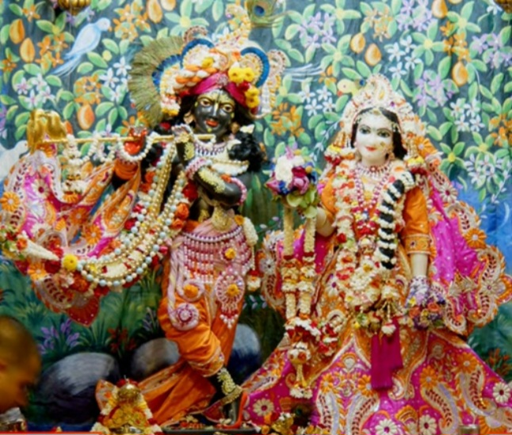
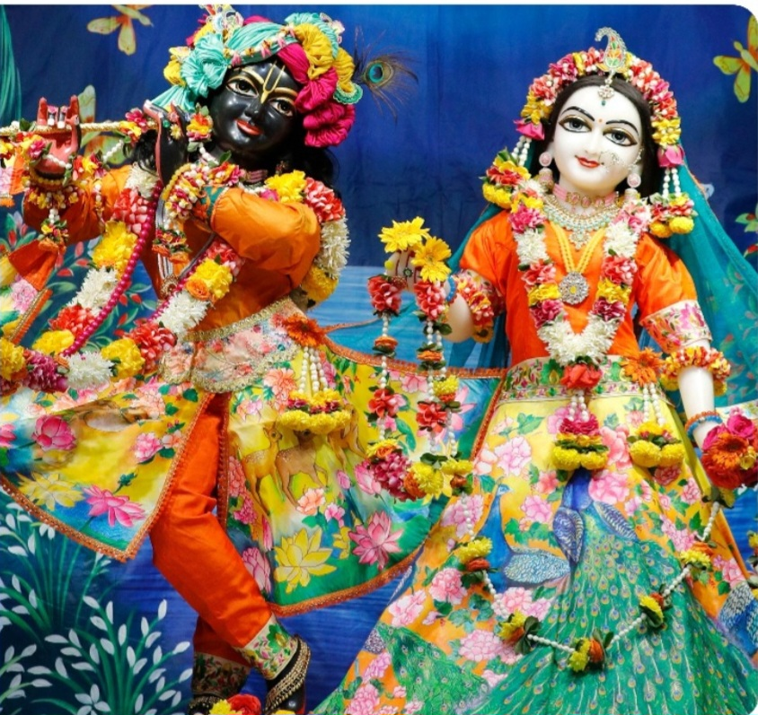
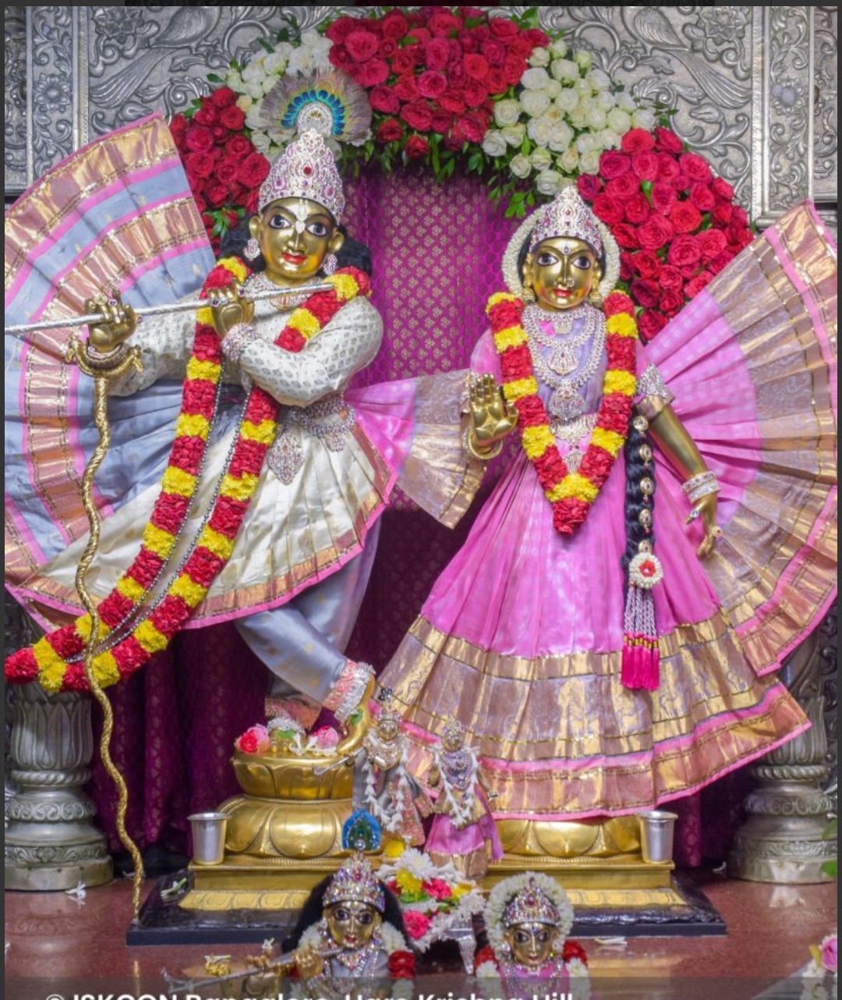
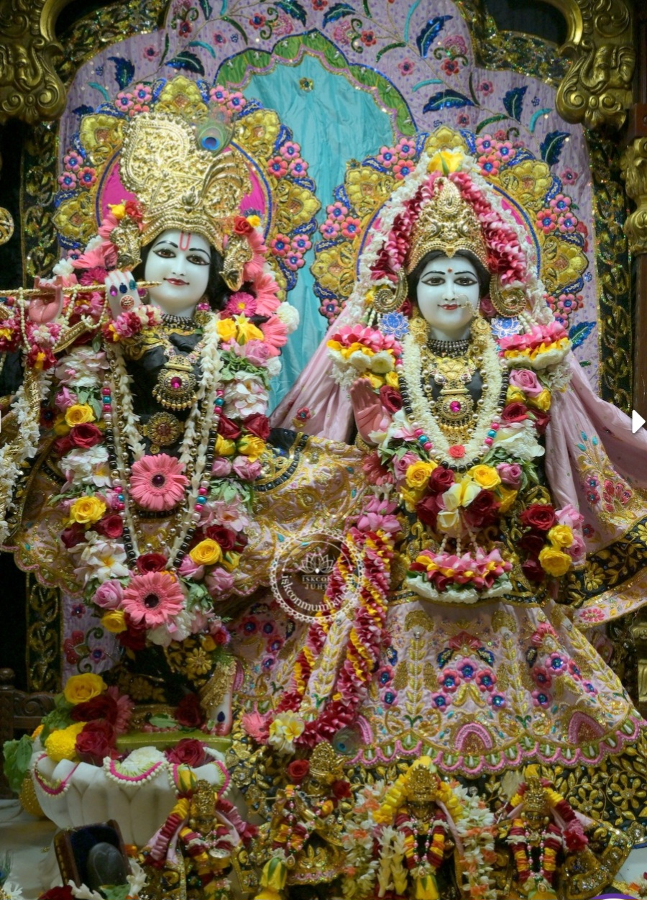

Radhe Krishna ISKCON temples are found in many places.They are dedicated to Lord Radhe Krishna and spread peace and devotion.People visit these temples for prayer and spiritual peace.
ISKCON temples promote devotion, didpline, and moral values among people.They organize kirtans, lectures, and spiritual programs that help devotees understand the teachings of Lord Krishna.
These temples also encourage a peaceful and positive way of life.

Iskcon Temple in Agra.

Iskcon Temple in Noida.

Iskcon Temple in Bangalore.

Iskcon Temple in Mumbai.